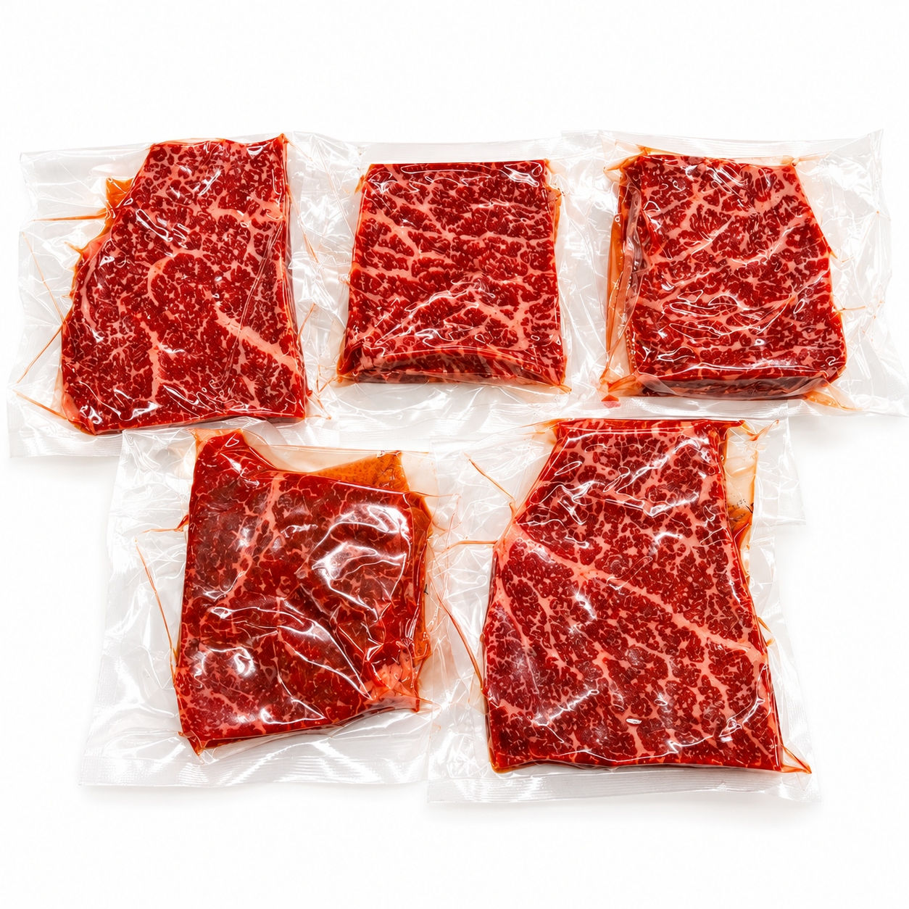
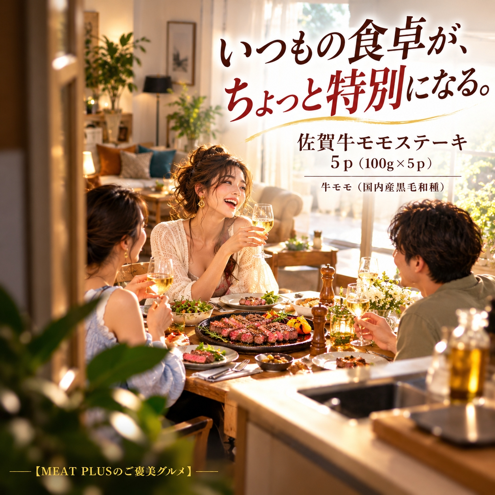

SCENE 01
M009

m 贈り物
佐賀牛モモステーキ 5ｐ（100g×5ｐ）
【食卓が華やぐ、佐賀牛の赤身の旨み。A4等級以上の贅沢。】
- 内容量5ｐ（100g×5ｐ）
- 保存冷凍
- 産地日本
商品の特徴を読む
特別な日のディナーに、あの人への心のこもった贈り物に、最高級の佐賀牛モモステーキはいかがでしょうか。 日本屈指のブランド和牛として知られる佐賀牛。その中でもA4等級以上に限定し、肉の旨みが凝縮されたモモの部位を厳選しました。赤身ならではのしっかりとした肉質と、噛むほどにあふれる深い味わいが特徴です。脂肪が控えめなので、ヘルシー志向の方や、お肉本来の味を楽しみたい方に特におすすめです。 一枚100gのステーキを、使いやすいように個別に真空パックしてお届けします。必要な分だけ解凍できるので、急な来客や「もう一品」という時にも大変便利。冷凍庫での長期保存も可能です。 ご家庭でのちょっとした贅沢はもちろん、お誕生日や記念日のお祝い、お中元・お歳暮といった季節のご挨拶など、大切な方へのギフトとしても大変喜ばれる逸品です。この一枚が、あなたと大切な人の食卓を、忘れられない時間に変えてくれるでしょう。
公式サイトへ移動します。価格・在庫・配送条件は移動先で最終確認してください。
SCENE 02
その中でもA4等級以上に限定し、肉の旨みが凝縮されたモモの部位を厳選しました。

SCENE 03
冷凍庫での長期保存も可能です。
PRODUCT INFORMATION
購入前に確認したい商品情報
- 商品名
- 佐賀牛モモステーキ 5ｐ（100g×5ｐ）
- 商品規格
- 5ｐ（100g×5ｐ）
- 保存方法
- 冷凍
- 原産国
- 日本
- 製造地
- 日本
- 賞味期限
- 発送日より3ヶ月
原材料
牛モモ（国内産黒毛和種）
FAQ
購入前のよくあるご質問
美味しい焼き方のコツはありますか？
お召し上がりになる半日～1日前に冷蔵庫に移してゆっくりと解凍してください。焼く30分ほど前に常温に戻すと、均一に火が通りやすくなります。強火のフライパンで両面にさっと焼き色をつけ、あとはお好みの焼き加減に仕上げるのがおすすめです。まずはシンプルに塩胡椒で素材の味をお楽しみください。
ギフトとして送りたいのですが、ラッピングや熨斗は可能ですか？
はい、対応しております。ご注文手続きの際にギフト設定をお選びいただき、熨斗（のし）の種類やお名入れなどをご指定いただけます。大切な方への贈り物として、心を込めてご用意させていただきます。
MEAT PLUS OFFICIAL SHOP
【食卓が華やぐ、佐賀牛の赤身の旨み。A4等級以上の贅沢。】
仕入れ・加工・梱包・発送まで自社で行うMEAT PLUSの公式オンラインショップでご注文いただけます。
公式オンラインショップで購入する商品選びの要点
佐賀牛モモステーキ 5ｐ（100g×5ｐ）。商品規格：5ｐ（100g×5ｐ）。保存方法：冷凍。原産国：日本。製造地：日本。賞味期限：発送日より3ヶ月。
価格・在庫・配送日・送料・ギフト対応は、公式通販の商品ページで最新情報をご確認ください。